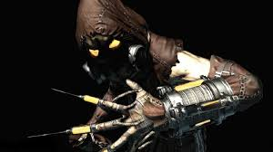

Andando pelo Asilo Batman encontrou o Espantalho, o vilão tem uma toxina do medo que faz suas vítimas delirarem derrote ele rápido antes que a toxina chegue no Batman.
1 - Tente conversar para que ele volte para sua cela.
2 -Rapidamente vá pra cima para neutraliza-lo.